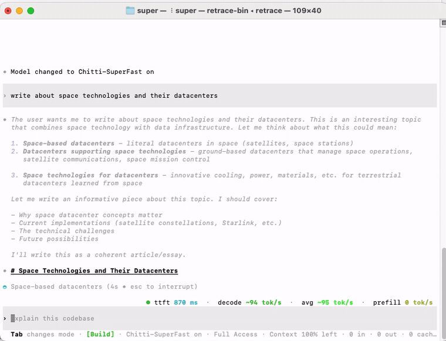

Retrace vs opencode · same model · matched tasks
TUNED
FOR SPEED
We ran both agents on the same model and the same tasks, then measured.
Retrace is a local-first coding agent for engineers who read the methodology. Head-to-head against opencode on the identical model, over five fresh cache-cold tasks, Retrace answers cheaper and faster end-to-end — with the same correctness. Every number below is reproducible from the repo.
git clone https://github.com/Retrace-AI/retrace

Cost per task
The bill for one task, gateway-metered, averaged over five matched cache-cold runs. Retrace’s tighter loop and warm prefix cache mean fewer full-price tokens.
Metered cost per task · lower is better
Wall-clock to answer
End-to-end time a user waits, per task. Retrace spends a hair more time in the model per call, yet wins the clock — because it carries far less non-model overhead around each task.
Wall-clock per task · lower is better
opencode carries ~6.9s of non-model overhead per task; Retrace’s leaner loop absorbs that gap and finishes first, even though its per-call model latency is slightly higher.
Prefix cache — the bug we fixed
A cache-busting token in Retrace’s prompt prefix meant almost nothing was reused between turns. We found it, removed it, and prefix-cache reuse went from near-zero to near-total on the matched workload — the change behind the cost and speed wins above.
Retrace prefix-cache hit rate · before & after the fix
Every number, both agents
The full matched benchmark — where Retrace leads and where opencode does. Nothing cherry-picked: opencode makes marginally fewer calls and is quicker inside a single model call; Retrace wins the two things a user feels — cost and total time.
| Per task · 5 cache-cold runs | Retrace | opencode | Edge |
|---|---|---|---|
| Cost | $0.00257 | $0.00307 | Retrace −16% |
| Wall-clock to answer | 10.7s | 12.0s | Retrace −11% |
| Prefix-cache reuse | 90.5% | conv-dependent | Retrace |
| Answer correctness | 5 / 5 | 5 / 5 | tie |
| Model calls / task | 3.3 | 3.0 | opencode |
| Per-call model latency | 2.12s | 1.71s | opencode |
Methodology
- Setup. Both agents run headless on 5 fresh single-purpose repos, reasoning off, run cache-cold to remove ordering bias. Same tasks, same prompts.
- Model. Identical model for both — Qwen-3.6-27B class — served through one gateway with prefix caching enabled. The only variable is the agent.
- Measurement. Cost and latency read from gateway spend logs per request; cache reuse from usage.prompt_tokens_details.cached_tokens; correctness graded on task completion.
- On cache. The 90.5% is per-task on matched runs. In blended production traffic a single long conversation can inflate either agent’s aggregate, so we report the matched figure, not the blend.
- Honesty. One model, one workload; opencode leads on raw call count and per-call latency. Real-world results depend on model, hardware, and task.
Read the code,
not just the chart.
Retrace is Apache-2.0 and self-hostable. Clone it, point it at your own gateway, and reproduce every figure on this page.